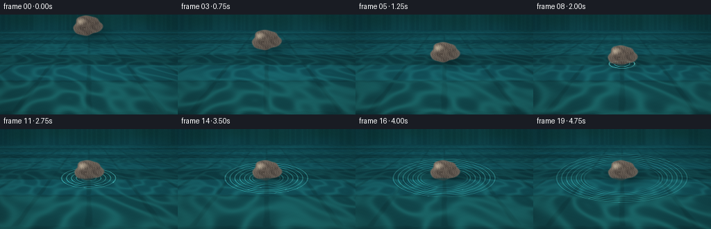
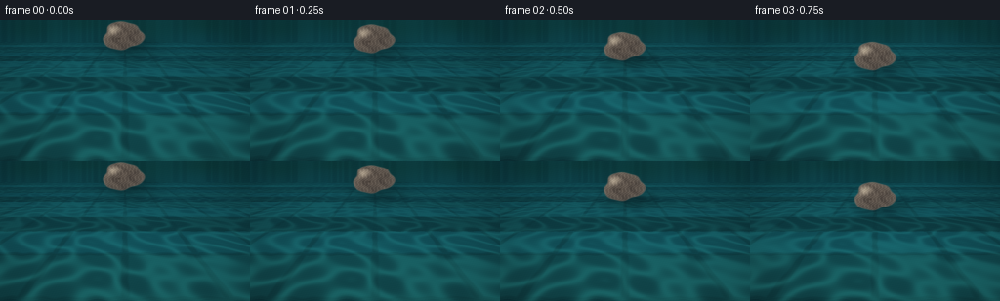

CODING AGENTS AS PIXEL WORLD MODELS
traex/DeepSeek-V4.1-Flash · phygen_007
点击播放 · 原生 RGB 像素
此结果可播放，但该运行尚未通过最终提交审核。页面展示不代表评测通过。
逐轮保存的候选
回放视频、检查图与代码变化。
每份候选均可单独播放。实际图片检查记录在下方工具轨迹中。
候选 01播放与检查图
点击播放 · 原生 RGB 像素


展开代码变化
--- 上一保存版本
+++ 本次保存版本
@@ -0,0 +1,324 @@
+from pathlib import Path
+
+import cv2
+import numpy as np
+
+import artifact_io
+
+
+WIDTH = 256
+HEIGHT = 144
+FPS = 4.0
+FRAMES = 20
+SUPERSAMPLE = 3
+
+
+def smoothstep(edge0, edge1, value):
+ value = np.clip((value - edge0) / (edge1 - edge0), 0.0, 1.0)
+ return value * value * (3.0 - 2.0 * value)
+
+
+def normalize(vector, axis=-1):
+ length = np.sqrt(np.sum(vector * vector, axis=axis, keepdims=True))
+ return vector / np.maximum(length, 1e-6)
+
+
+def make_water_field(x, y, time):
+ """Return underwater coordinates, caustic light, and fine surface relief."""
+ horizon = 22.0
+ q = np.clip((y - horizon) / (HEIGHT - horizon), 0.0, 1.0)
+ perspective = 1.0 / (0.145 + 0.855 * q)
+ world_x = (x - WIDTH * 0.5) * perspective / (WIDTH * 0.55)
+ world_z = perspective * 1.55
+
+ ambient = (
+ 0.52 * np.sin(8.0 * world_x + 2.1 * np.sin(5.0 * world_z + time * 0.8))
+ + 0.48 * np.sin(7.3 * world_z + 2.5 * np.sin(4.4 * world_x - time * 0.65))
+ + 0.30 * np.sin(11.0 * (world_x + world_z) + 1.2 * np.sin(3.0 * world_x - time))
+ )
+ caustic = np.exp(-np.square(ambient / 0.48))
+ caustic += 0.45 * np.exp(-np.square((ambient + 1.55) / 0.24))
+
+ relief = (
+ 0.52 * np.sin(30.0 * world_x + 7.0 * world_z + time * 1.4)
+ + 0.30 * np.sin(18.0 * world_z - 9.0 * world_x - time * 1.1)
+ + 0.18 * np.sin(48.0 * world_x + 21.0 * world_z + time * 2.0)
+ )
+ return world_x, world_z, q, caustic, relief
+
+
+def ripple_field(x, y, age):
+ if age <= 0.0:
+ return np.zeros_like(x), np.zeros_like(x)
+
+ cx, cy = 128.0, 70.5
+ radial = np.sqrt(np.square((x - cx) / 1.0) + np.square((y - cy) / 0.37))
+ front = 4.5 + 27.5 * age
+ wave = np.zeros_like(radial)
+
+ for ring_index in range(6):
+ radius = front - 7.2 * ring_index
+ packet_width = 2.2 + ring_index * 0.45
+ packet = np.exp(-np.square((radial - radius) / packet_width))
+ wave += packet * np.cos((radial - radius) * 1.38 - ring_index * 0.22)
+
+ wave *= 0.72 / (1.0 + age * 0.62)
+ depression = np.exp(-np.square(radial / (4.2 + age * 1.3)))
+ wave -= depression * 0.48 / (1.0 + age * 1.1)
+ return wave, radial
+
+
+def render_water(x, y, time, age):
+ world_x, world_z, q, caustic, relief = make_water_field(x, y, time)
+ wave, radial = ripple_field(x, y, age)
+
+ # Ripple slopes distort both the pool floor and its reflected light.
+ ripple_dx = np.gradient(wave, axis=1)
+ ripple_dy = np.gradient(wave, axis=0)
+ distortion = 0.016 * wave + 0.010 * relief
+ tile_u = (world_x + distortion) / 0.78
+ tile_v = (world_z + distortion * 1.5) / 0.78
+
+ iu = np.floor(tile_u).astype(np.int32)
+ iv = np.floor(tile_v).astype(np.int32)
+ tile_hash = 0.5 + 0.5 * np.sin(iu * 12.9898 + iv * 78.233 + 2.7)
+ tile_mix = tile_hash[..., None]
+ tile_a = np.array([0.075, 0.365, 0.390])
+ tile_b = np.array([0.105, 0.455, 0.455])
+ tile_c = np.array([0.055, 0.285, 0.330])
+ floor = tile_a * (1.0 - tile_mix) + tile_b * tile_mix
+ floor = floor * (0.80 + 0.20 * np.sin(iv * 4.1 + 1.0))[..., None]
+ floor = floor * (1.0 - 0.22 * smoothstep(0.55, 0.95, tile_hash))[..., None]
+ floor = 0.76 * floor + 0.24 * tile_c
+
+ frac_u = tile_u - np.floor(tile_u)
+ frac_v = tile_v - np.floor(tile_v)
+ edge_u = np.minimum(frac_u, 1.0 - frac_u)
+ edge_v = np.minimum(frac_v, 1.0 - frac_v)
+ grout_edge = np.minimum(edge_u, edge_v)
+ grout = 1.0 - smoothstep(0.025, 0.065, grout_edge)
+ grout *= smoothstep(0.015, 0.10, q)
+ floor = floor * (1.0 - 0.42 * grout[..., None])
+ floor += np.array([0.018, 0.085, 0.090]) * grout[..., None]
+
+ # Caustics become broad and sparse in the foreground due to perspective.
+ caustic_strength = caustic * (0.30 + 0.70 * q) * 0.22
+ floor += np.array([0.22, 0.76, 0.69]) * caustic_strength[..., None]
+
+ # A cool water body and a soft reflected garden above the vanishing line.
+ water_tint = np.array([0.025, 0.235, 0.285])
+ fresnel = 0.12 + 0.33 * (1.0 - q) ** 2
+ water = floor * (1.0 - fresnel[..., None]) + water_tint * fresnel[..., None]
+
+ reflection = np.zeros_like(x)
+ for bx, by, sx, sy, strength in [
+ (30.0, 8.0, 31.0, 15.0, 0.70),
+ (84.0, 3.0, 25.0, 11.0, 0.56),
+ (143.0, 9.0, 38.0, 15.0, 0.64),
+ (210.0, 4.0, 30.0, 13.0, 0.74),
+ (247.0, 15.0, 22.0, 18.0, 0.52),
+ ]:
+ reflection += strength * np.exp(
+ -np.square((x - bx) / sx) - np.square((y - by) / sy)
+ )
+ reflection *= np.exp(-np.square((y - 4.0) / 25.0))
+ water = water * (1.0 - 0.46 * reflection[..., None])
+ water += np.array([0.015, 0.095, 0.068]) * reflection[..., None]
+
+ # Moving highlights give the surface scale without overwhelming the ripples.
+ slope_light = 1.0 + 2.2 * ripple_dx - 1.5 * ripple_dy
+ water *= slope_light[..., None]
+ fine_glint = np.clip((relief + wave * 2.0 - 1.08) / 0.36, 0.0, 1.0) ** 5
+ glint_mask = smoothstep(0.10, 0.75, q) * (0.45 + 0.55 * np.exp(-np.square((x - 178.0) / 94.0)))
+ water += np.array([0.34, 0.58, 0.56]) * (fine_glint * glint_mask)[..., None]
+
+ # The leading ripple carries a crisp, pale crest.
+ if age > 0.0:
+ crest = np.clip(wave * 1.5, 0.0, 1.0)
+ water += np.array([0.22, 0.47, 0.44]) * crest[..., None]
+ water *= (1.0 - 0.10 * np.clip(-wave, 0.0, 1.0))[..., None]
+
+ return water
+
+
+def stone_geometry(x, y, center_x, center_y, scale_x, scale_y, rotation):
+ cos_r, sin_r = np.cos(rotation), np.sin(rotation)
+ local_x = (x - center_x) * cos_r + (y - center_y) * sin_r
+ local_y = -(x - center_x) * sin_r + (y - center_y) * cos_r
+ u = local_x / scale_x
+ v = local_y / scale_y
+ theta = np.arctan2(v, u)
+ radius = np.sqrt(np.square(u) + np.square(v))
+ edge = (
+ 1.0
+ + 0.075 * np.sin(3.0 * theta + 0.75)
+ + 0.040 * np.sin(5.0 * theta - 0.40)
+ + 0.022 * np.sin(8.0 * theta + 1.30)
+ )
+ return u, v, radius, edge
+
+
+def render_stone(x, y, center_x, center_y, rotation, submersion, time):
+ scale_x, scale_y = 20.5, 14.1
+ u, v, radius, edge = stone_geometry(
+ x, y, center_x, center_y, scale_x, scale_y, rotation
+ )
+ antialias = 0.055
+ mask = 1.0 - smoothstep(edge - antialias, edge + antialias, radius)
+ if np.max(mask) <= 0.0:
+ return np.zeros_like(x[..., None]), np.zeros_like(x)
+
+ height = np.sqrt(np.clip(1.0 - np.square(radius / np.maximum(edge, 0.7)), 0.0, 1.0))
+ nx = u * 0.73
+ ny = v * 0.86
+ nz = 0.48 + 0.68 * height
+ normal = normalize(np.stack((nx, ny, nz), axis=-1))
+ light = normalize(np.array([-0.63, -0.72, 0.60]))
+ diffuse = np.clip(np.sum(normal * light, axis=-1), 0.0, 1.0)
+ view = np.array([0.0, 0.0, 1.0])
+ half_vector = normalize(light + view)
+ specular = np.clip(np.sum(normal * half_vector, axis=-1), 0.0, 1.0) ** 34
+
+ broad = 0.5 + 0.5 * np.sin(7.5 * u + 2.2 * np.sin(5.0 * v + 0.8))
+ grain = 0.5 + 0.5 * np.sin(37.0 * u + 19.0 * v + 2.5 * np.sin(13.0 * v))
+ mottle = (
+ 0.52 * broad
+ + 0.22 * grain
+ + 0.26 * (0.5 + 0.5 * np.sin(15.0 * u - 9.0 * v + 1.1 * np.sin(4.0 * v)))
+ )
+ base = np.array([0.355, 0.335, 0.300])
+ warm = np.array([0.410, 0.375, 0.315])
+ cool = np.array([0.285, 0.315, 0.310])
+ stone_color = base[None, None, :] * (0.74 + 0.42 * mottle[..., None])
+ stone_color = stone_color * (1.0 - 0.23 * broad[..., None]) + warm * (0.15 * broad[..., None])
+ stone_color = stone_color * (0.84 + 0.24 * diffuse[..., None])
+ stone_color += cool * (0.13 * (1.0 - diffuse[..., None]))
+
+ # Fine pits and a few pale mineral flecks keep the stone from looking plastic.
+ pits = np.exp(
+ -(
+ np.square((u + 0.24) / 0.10)
+ + np.square((v - 0.16) / 0.075)
+ )
+ )
+ pits += 0.65 * np.exp(
+ -(
+ np.square((u - 0.37) / 0.075)
+ + np.square((v + 0.26) / 0.055)
+ )
+ )
+ flecks = np.clip((grain - 0.80) / 0.20, 0.0, 1.0) * np.clip(height * 1.5, 0.0, 1.0)
+ stone_color *= (1.0 - 0.34 * pits[..., None])
+ stone_color += np.array([0.30, 0.29, 0.255]) * (0.23 * flecks[..., None])
+ stone_color += np.array([0.70, 0.66, 0.56]) * (0.42 * specular[..., None])
+ stone_color += np.array([0.12, 0.13, 0.12]) * np.square(1.0 - height)[..., None]
+
+ # The lower portion is seen through the water after contact.
+ waterline = 70.7 + 0.55 * np.sin(x * 0.22 + time * 2.2)
+ submerged = smoothstep(waterline - 0.8, waterline + 1.2, y) * submersion
+ water_tint = np.array([0.035, 0.270, 0.295])
+ stone_color = stone_color * (1.0 - 0.58 * submerged[..., None])
+ stone_color += water_tint * (0.52 * submerged[..., None])
+ stone_color *= (1.0 - 0.10 * smoothstep(0.45, 1.0, v))[..., None]
+ return np.clip(stone_color, 0.0, 1.0) * mask[..., None], mask
+
+
+def render_frame(index):
+ time = index / FPS
+ contact_time = 1.5
+ ss_width = WIDTH * SUPERSAMPLE
+ ss_height = HEIGHT * SUPERSAMPLE
+ x = (np.arange(ss_width, dtype=np.float32) + 0.5) / SUPERSAMPLE
+ y = (np.arange(ss_height, dtype=np.float32) + 0.5) / SUPERSAMPLE
+ x, y = np.meshgrid(x, y)
+
+ age = max(0.0, time - contact_time)
+ water = render_water(x, y, time, age)
+
+ # Stone descends with a gentle deceleration, then settles by a few pixels.
+ approach = np.clip(time / contact_time, 0.0, 1.0)
+ eased = approach * approach * (3.0 - 2.0 * approach)
+ center_x = 126.0 + 2.2 * eased + 0.35 * np.sin(time * 1.7)
+ center_y = 16.0 + 41.5 * eased
+ if time > contact_time:
+ settle = 1.0 - np.exp(-(time - contact_time) * 2.8)
+ center_y += 2.1 * settle
+ rotation = -0.075 + 0.045 * eased
+ submersion = smoothstep(contact_time - 0.03, contact_time + 0.18, time)
+
+ # Soft contact shadow, slightly offset toward the lower right.
+ shadow_x = center_x + 7.0
+ shadow_y = min(center_y + 13.0, 75.0)
+ shadow = np.exp(
+ -np.square((x - shadow_x) / 27.0)
+ -np.square((y - shadow_y) / 10.5)
+ )
+ water *= (1.0 - 0.28 * shadow)[..., None]
+
+ stone, mask = render_stone(
+ x, y, center_x, center_y, rotation, submersion, time
+ )
+ image = water * (1.0 - mask[..., None]) + stone
+
+ # A thin meniscus links the stone to the water at the contact point.
+ if age >= 0.0 and time >= contact_time - 0.12:
+ pulse = np.exp(-age * 2.3)
+ meniscus_radius = 1.0 + age * 1.6
+ ring_radius = np.sqrt(
+ np.square((x - center_x) / (17.5 + meniscus_radius))
+ + np.square((y - (70.1 + center_y - 57.0)) / (5.0 + meniscus_radius * 0.2))
+ )
+ meniscus = np.exp(-np.square((ring_radius - 1.0) / 0.08))
+ meniscus *= pulse * (0.55 + 0.45 * submersion)
+ image += np.array([0.46, 0.78, 0.70]) * (0.36 * meniscus[..., None])
+
+ # Gentle reflected color and reflected stone shape at the waterline.
+ if time < contact_time:
+ reflection_center = 2.0 * 70.5 - center_y
+ refl_u, refl_v, refl_radius, refl_edge = stone_geometry(
+ x, y, center_x + 1.5, reflection_center, 18.0, 11.0, rotation
+ )
+ reflection_mask = (
+ 1.0 - smoothstep(refl_edge - 0.12, refl_edge + 0.12, refl_radius)
+ )
+ reflection_mask *= smoothstep(70.5, 73.0, y) * (1.0 - smoothstep(91.0, 102.0, y))
+ wobble = 0.5 + 0.5 * np.sin(y * 0.72 + x * 0.12 + time * 3.0)
+ image *= (1.0 - 0.20 * reflection_mask * wobble)[..., None]
+ image += np.array([0.01, 0.07, 0.075]) * (reflection_mask * wobble)[..., None]
+
+ # Atmospheric vignette and a restrained cool grade.
+ radius = np.sqrt(
+ np.square((x - WIDTH * 0.5) / (WIDTH * 0.64))
+ + np.square((y - HEIGHT * 0.47) / (HEIGHT * 0.72))
+ )
+ vignette = 1.0 - 0.22 * np.clip(radius, 0.0, 1.0) ** 2
+ image *= vignette[..., None]
+ image = np.clip(image, 0.0, 1.0)
+ image = image ** np.array([0.96, 1.01, 1.00])
+
+ # A small bloom pass sells the wet highlights at this resolution.
+ bright = np.clip((image - 0.68) / 0.32, 0.0, 1.0)
+ bloom = cv2.GaussianBlur(bright, (0, 0), sigmaX=4.0 * SUPERSAMPLE, sigmaY=4.0 * SUPERSAMPLE)
+ image = np.clip(image + 0.16 * bloom, 0.0, 1.0)
+
+ grain = (
+ np.sin(x * 29.1 + y * 17.7 + index * 2.9)
+ + 0.6 * np.sin(x * 57.0 - y * 41.0 + index * 1.7)
+ ) * 0.0045
+ image = np.clip(image + grain[..., None], 0.0, 1.0)
+
+ downsampled = cv2.resize(
+ image, (WIDTH, HEIGHT), interpolation=cv2.INTER_AREA
+ )
+ return np.clip(downsampled * 255.0 + 0.5, 0.0, 255.0).astype(np.uint8)
+
+
+def main():
+ case_dir = Path(__file__).resolve().parent
+ frames = np.stack([render_frame(index) for index in range(FRAMES)])
+ artifact_io.save(frames, case_dir)
+ print(f"Rendered {FRAMES} frames at {WIDTH}x{HEIGHT}, {FPS:g} fps")
+
+
+if __name__ == "__main__":
+ main()
可观测工具轨迹
实际执行的命令与返回图片。
命令 1exit 0
/bin/bash -c "pwd && rg --files -g '"'!*__pycache__*'"' | sed -n '1,160p'"
命令 2exit 0
/bin/bash -c 'cat prompt.txt'
命令 3exit 0
/bin/bash -c 'cat GENERATION_RULES.md'
命令 4exit 0
/bin/bash -c 'cat task_spec.json'
命令 5exit 0
/bin/bash -c "sed -n '1,240p' artifact_io.py"
命令 6exit 0
/bin/bash -c "sed -n '1,260p' player_template.html"
命令 7exit 0
/bin/bash -c "python - <<'PY' import importlib.util for m in ['numpy','PIL','cv2','imageio','matplotlib','scipy','skimage']: print(m, bool(importlib.util.find_spec(m))) PY"
命令 8exit 0
/bin/bash -c 'python generate.py'
命令 9exit 0
/bin/bash -c "python - <<'PY'
from PIL import Image
import numpy as np
for i in [0,3,6,9,12,19]:
a=np.asarray(Image.open(f'frames/{i:02d}.png')).astype(float)
lum=0.2126*a[:,:,0]+0.7152*a[:,:,1]+0.0722*a[:,:,2]
print(i, 'mean',a.mean((0,1)).round(1),'lum range',lum.min().round(1),lum.max().round(1),'std',lum.std().round(1))
PY"命令 10exit 0
/bin/bash -c "python - <<'PY'
from PIL import Image, ImageOps
import numpy as np
chars=' .:-=+*#%@'
for fi in [0,3,6,9,12,19]:
im=Image.open(f'frames/{fi:02d}.png').convert('L').resize((64,36),Image.Resampling.BILINEAR)
a=np.asarray(im).astype(float)
a=(a-a.min())/(a.max()-a.min()+1e-6)
print('\\nFRAME',fi)
for row in a:
print(''.join(chars[min(9,int(v*9.999))] for v in row))
PY"命令 11exit 0
/bin/bash -c "ls -lh frames/*.png inspection.png transition_check.png pixels.npz index.html generate.py && python - <<'PY'
import numpy as np
z=np.load('pixels.npz')['pixels']
print('pixels',z.shape,z.dtype,'changed bytes frame-to-frame')
for i in range(1,len(z)):
print(i, int(np.count_nonzero(z[i]"'!=z[i-1])))
PY'命令 12exit 1
/bin/bash -c "python - <<'PY'
from PIL import Image
im=Image.open('inspection.png')
print(im.size)
im.resize((im.width*2,im.height*2),Image.Resampling.NEAREST).save('/tmp/inspection2x.png')
PY"命令 13exit 0
/bin/bash -c 'which chafa || which viu || which jp2 || which img2txt || true'
命令 14exit 0
/bin/bash -c "python - <<'PY'
from PIL import Image
import numpy as np
frames=np.stack([np.asarray(Image.open(f'frames/{i:02d}.png')) for i in range(20)])
print('shape',frames.shape,frames.dtype)
for i in range(1,20):
d=np.abs(frames[i].astype(int)-frames[i-1].astype(int))
print(f'{i:02d}: changed={np.count_nonzero(np.any(d,axis=2)):5d}, mean_abs={d.mean():5.2f}, max={d.max()}')
# Region contrast around stone / center and ripple annulus at final frames.
for i in [0,6,7,12,19]:
a=frames[i].astype(float)
stone=a[35:85,95:160].mean((0,1))
water=a[90:130,30:90].mean((0,1))
print(i,'stone_bgr',stone.round(1),'water_bgr',water.round(1))
PY"命令 15exit 0
/bin/bash -c "python -m py_compile generate.py && python - <<'PY'
from pathlib import Path
import json, re
html=Path('index.html').read_text()
print('index placeholders:', re.findall(r'__[A-Z]+__', html))
print('index size:', len(html))
print('frame count:', len(list(Path('frames').glob('*.png'))))
print('spec:', json.loads(Path('task_spec.json').read_text()))
PY"保存候选 1 份；完成命令 15 次；可验证图片返回 0 张。原始 API 响应与完整日志保留在本地。